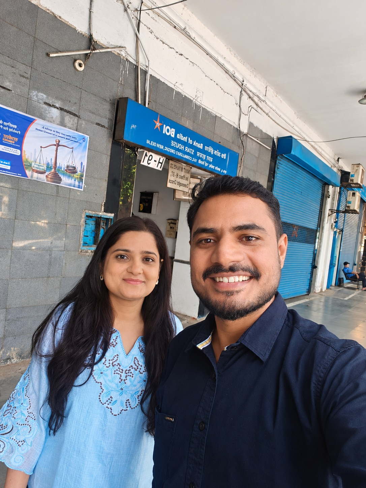
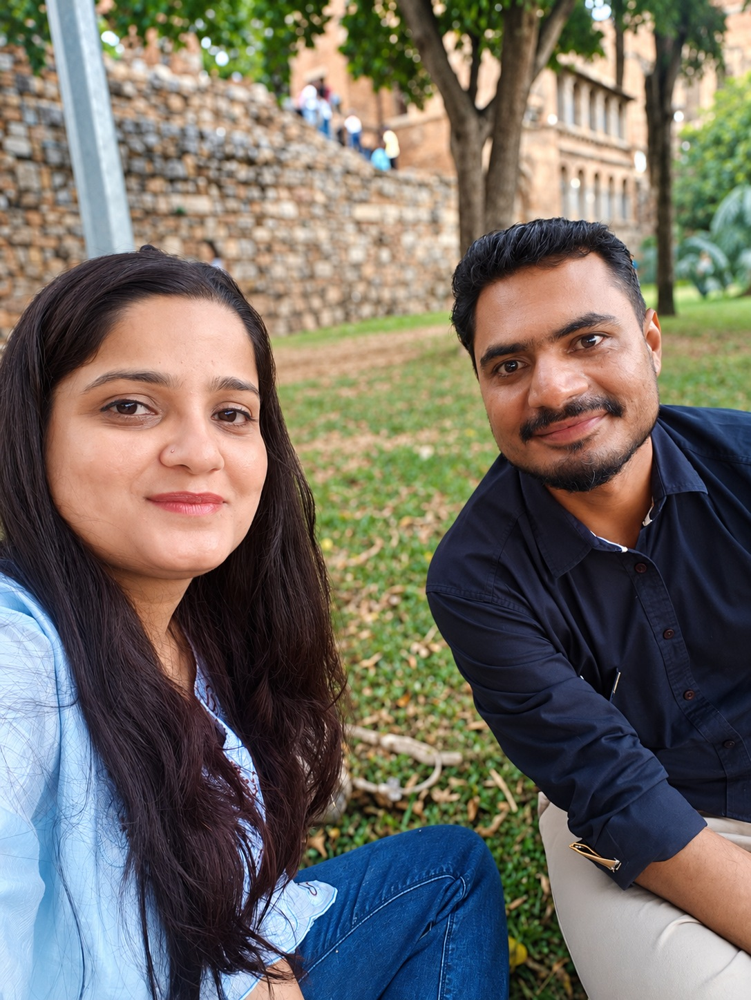
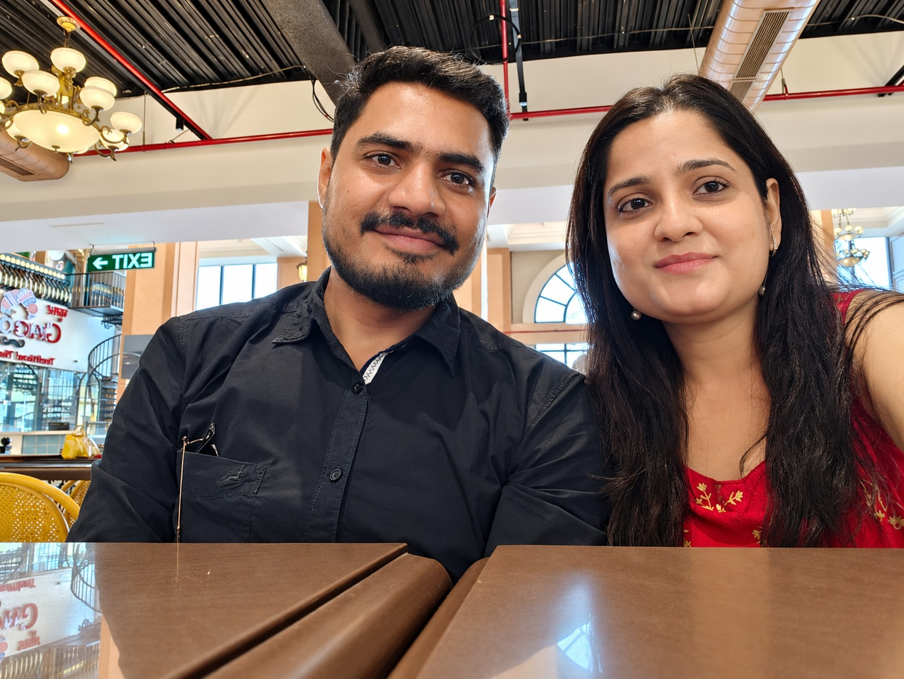

a moment I never want to forget.
✦
There is a whole letter behind this memory.
Everything I felt. Everything I couldn’t say.
I couldn’t say it all when you were beside me.
So I made a little world where I finally could.

my favourite place, beside you.
you + me ♡There is a whole letter behind this memory.
Everything I felt. Everything I couldn’t say.
Some photographs. A thousand feelings.
Eight memories were never going to be enough
to tell you how much you mean to me.
Every road. Every cup of chai. Every little moment.
Beautiful, because you were there.

Our next chapter is still waiting for us.